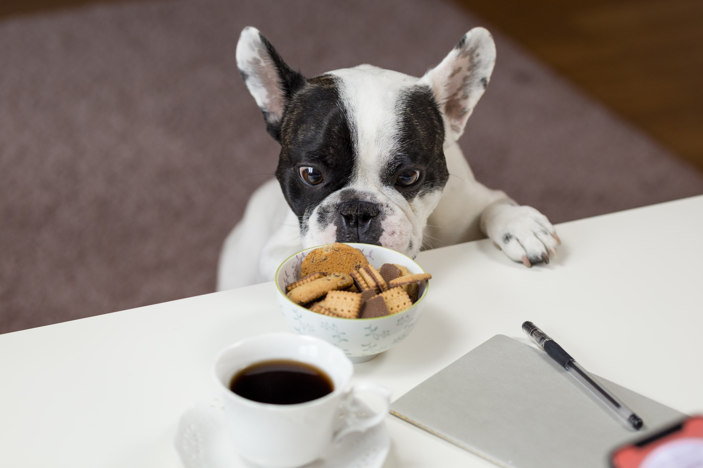

Mie 02/09/2020
LOS 10 ERRORES MÁS HABITUALES EN LA ALIMENTACIÓN
¡Mucho de lo que creíamos saber sobre la alimentación de nuestras mascotas estaba equivocado! En este artículo repasaremos cuales son los errores más habituales que cometemos al alimentar a nuestra mascota y como podemos corregirlos para mejorar su salud y calidad de vida.